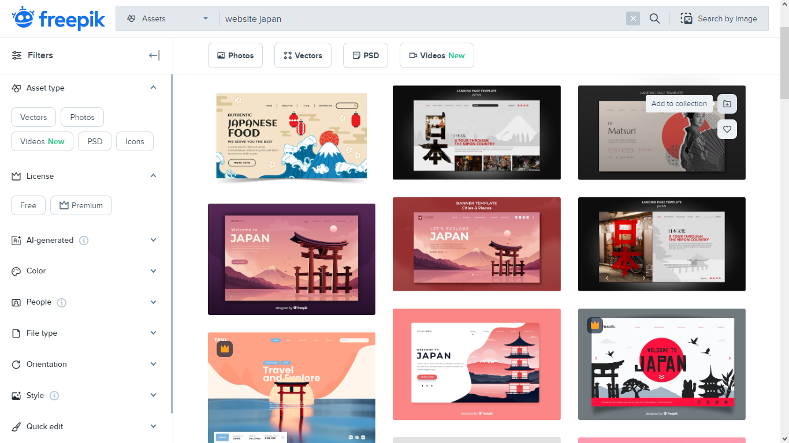
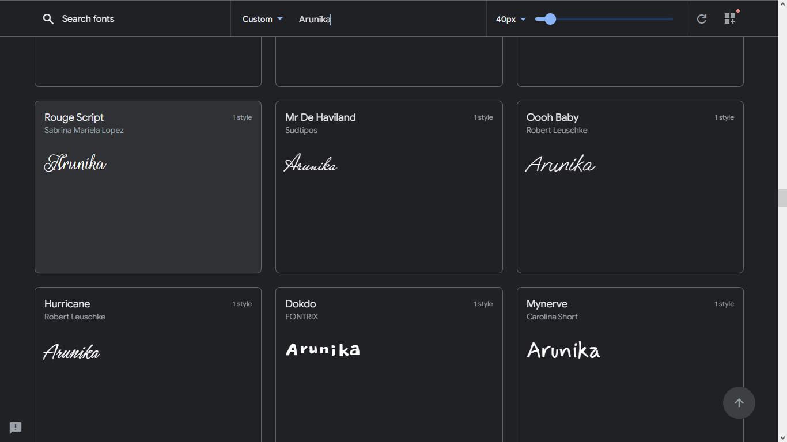
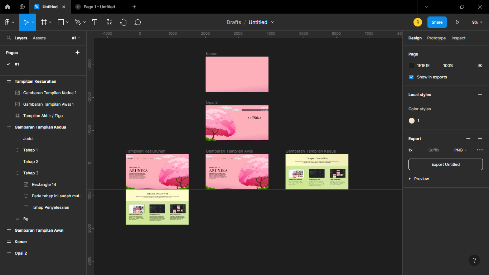

Tahapan Desain Web
Tahap awal desain web dimulai pada Senin, 5 Juni 2023.Terdapat tiga tahapan utama yang dilalui secara berurut, yaitu: Mencari Referensi, Mencari Aset, dan Esekusi.

Tahap Mencari Referensi
Referensi di dapat dengan mencari di website freepik.com dengan berbagai kata kunci seperti “Website”, “ Website Minimalis”, dan lain-lain.

Tahap Mencari Aset
Aset gambar di dapat dari freepik.com, untuk aset font di dapat dari fonts.google.com, untuk aset warna menggunakan color.adobe.com.

Tahap Esekusi
Pada tahap ini sudah mulai melakukan desain secara menyeluruh yang nantinya di bagi menjadi 3 bagian juga, yaitu desain header, isi, dan footer.